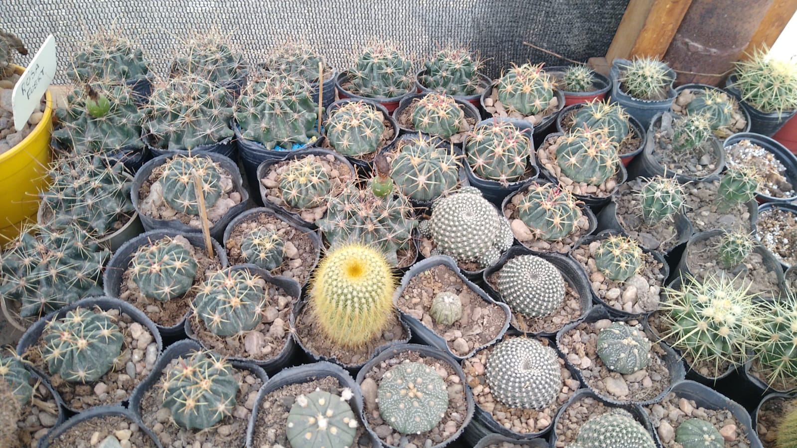
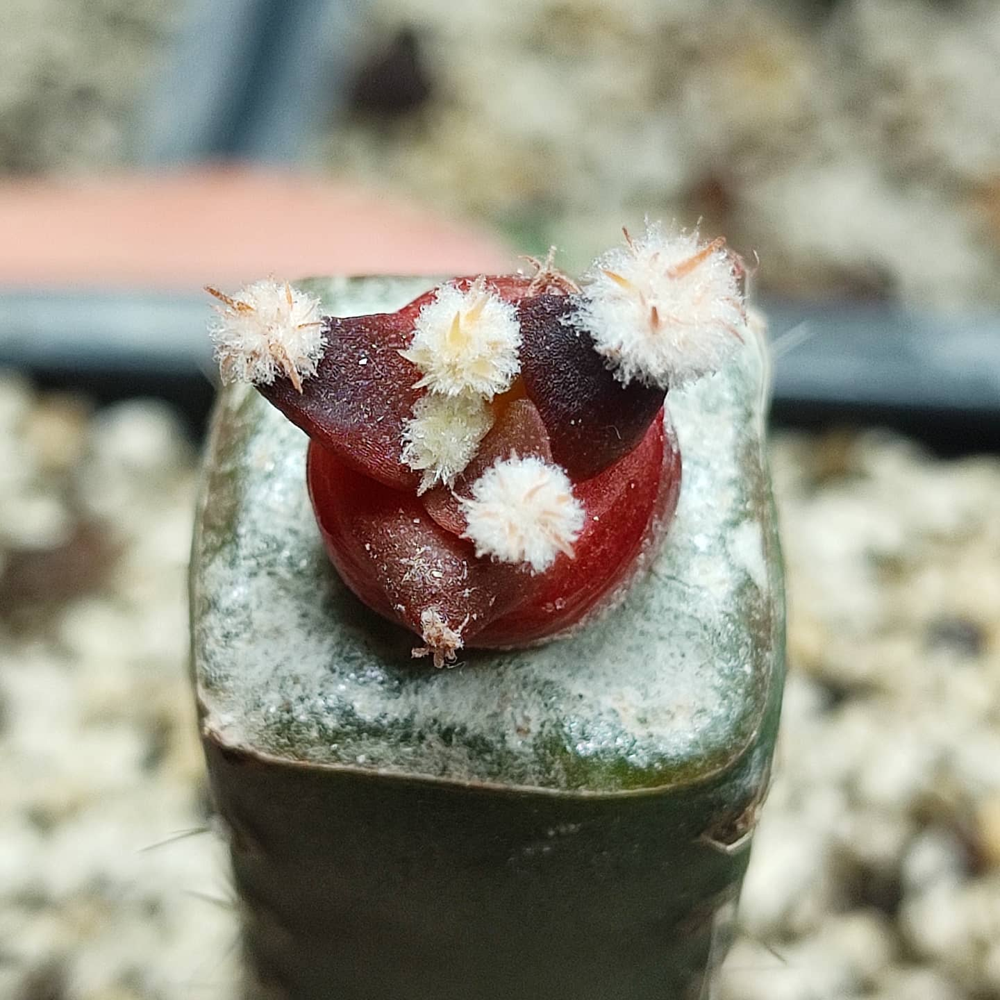

Cactus Coleccionables
Vivero
Nuestro objetivo en Cactus Coleccionables es producir plantas de gran calidad. Para poder obtener los mejores resultados nuestra producción se realiza en invernaderos, en los cuales podemos controlar el ambiente adecuado que necesitan nuestas plantas en cada momento del desarrollo.

La producción de cactus comienza en los semilleros, donde controlamos temperatura y humedad para lograr el mejor porcentaje de germinación.

La siguiente etapa consiste en seleccionar los mejores individuos que se van a injertar. El injerto se realiza sobre un cactus de otra especie.

El resultado que obtenemos son cactus con un mayor crecimiento en menos tiempo y menor riesgo de enfermedades.